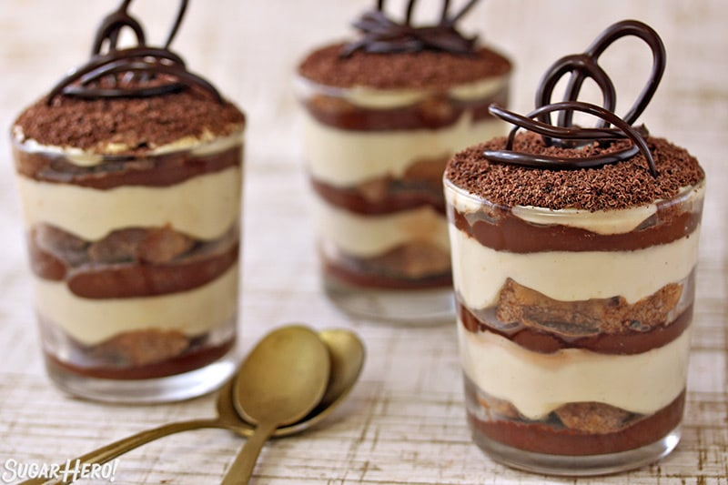

Tiramisu

Tiramisu is a coffee-flavoured Italian dessert. It is made of ladyfingers dipped in coffee, layered with a whipped mixture of eggs, sugar, and mascarpone cheese, flavoured with cocoa.
Following are the ingredients required to make one of the best tiramisu:
- 8 large eggs, separated
- 1 pound mascarpone
- 1 cup granulated sugar
- 4 ounces almond biscotti
- 11/2 cups brewed espresso, cooled
- 2 tablespoons plus 2 teaspoons coffee liqueur, such as Kahlua
- Ladyfingers for Tiramisu
- 11/2 cups heavy cream
- 1 tablespoon confectioners' sugar
- 1 teaspoon vanilla extract
- Best-quality milk chocolate, chilled, for garnish
To prepare this delicious treat follow the instructions below:
- Whisk together yolks and mascarpone in a large bowl until smooth. Add granulated sugar; whisk until dissolved. Set aside.
- Place biscotti in the bowl of a food processor; pulse to form coarse crumbs. Fold biscotti into mascarpone mixture; set aside.
- In the bowl of an electric mixer fitted with the whisk attachment, add egg whites; beat until soft peaks form. Fold egg whites into mascarpone mixture; set aside.
- Combine espresso and liqueur in a medium bowl; pour half the mixture into a pie plate. Quickly dip half the ladyfingers individually into the pie plate, and place in the bottom of a 13-by-9-inch glass baking dish; fit snugly to line. Evenly spread half the mascarpone mixture over ladyfingers; repeat layers.
- In a large bowl, whisk together heavy cream, confectioners' sugar, and vanilla until soft peaks form. Spread whipped cream evenly over tiramisu; garnish with grated chocolate. Chill at least 2 hours and preferably overnight before serving.